Спортивний клуб карате «DAO TRADITIONAL KARATE CLUB» веде роботу з поширення та розвитку стилю карате-до Шотокан. Клуб входить до складу ХОФК (Харківська обласна федерація карате-до) та є частиною міжнародної організації JKS (Japan Karate Shotorenmei). Та співпрацює з іншими федераціями: SKIEF, JKA, WKF (всесвітня федерація карате).
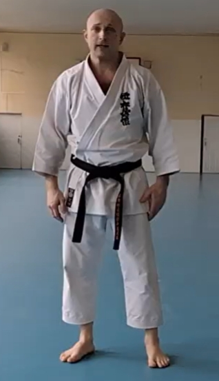
Клізуб Артем Сергійович: тренер клубу
- 4 дан JKS;
- екзаменатор із експертною ліцензією категорії D;
- суддя національної категорії;
Заняття в клубі проводяться з учнями різних вікових категорій за наступними напрямками:
- Kata – формальні вправи;
- Kihon - традиційна техніка;
- Kumite – спортивний поєдинок;
- Kobudo - основи володіння бо;
- kendo;
- Основи самооборони;
- загальнофізична підготовка.
Основи Карате
Карате (яп. 空手, «порожня рука») — це японське бойове мистецтво, система самозахисту, що ґрунтується на використанні ударів руками, ногами, блоків, а також філософії самовдосконалення, виховання характеру, дисципліни та духовної гармонії.
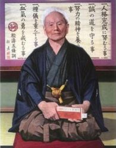
Г. Фунакоші - є засновником стилю Шотокан, у науку своїм учням залишив зведення правил, якого слід дотримуватися і на тренуваннях, і в житті.
Додзё Кун – п'ять основоположних принципів карате-до, які Фунакоші Гічін вважав головними і яким повинен слідувати в житті кожен каратека. Кожен принцип починається з номера один тому, що він вважав, що жоден з цих принципів не є більш важливим, ніж інші.
Головне! Вдосконалюй себе!
一、人格完成に努むること
(Hitotsu, jinkaku kansei ni tsutomuru koto.)
Хитоцу! дзинкаку кансэй ни цутомуру кото!Головне! Будь щирим!
一、誠の道を守ること
(Hitotsu, makoto no michi o mamoru koto.)
Хитоцу! макото но мити о мамору кото!Головне! Намагайся щосили!
一、努力の精神を養うこと
(Hitotsu, doryōku no seishin o yashinau koto.)
Хитоцу! доройоку но сэйшин о ясинау кото.Головне! Шануй інших!
一、礼儀を重んずること
(Hitotsu, reigi o omonzuru koto.)
Хитоцу! рэйги о омондзуру кото!Головне! Виховуй самовладання!
一、血気の勇を戒むること
(Hitotsu, kekki no yū wo imashimuru koto.)
Хитоцу! кэкки но ё имасимуру кото!
Розділ КАТА
Ката (形) — це формалізований комплекс рухів, що імітує бій з одним або декількома уявними супротивниками.
Мета: Вивчення правильної техніки (стійки, блоки, удари), дихання, рівноваги, концентрації та покращення фізичної форми.
Особливості: Це «енциклопедія» карате, де зберігаються класичні бойові принципи. Ката оцінюється суддями за точність, швидкість, силу та розуміння рухів.
Taikyoku shodan — великий початок. Перше (нульове) ката в шотокан карате. Входить до програми екзамену на білий пояс (9-КЮ). Призначений для навчання самої базової техніки карате. Відео
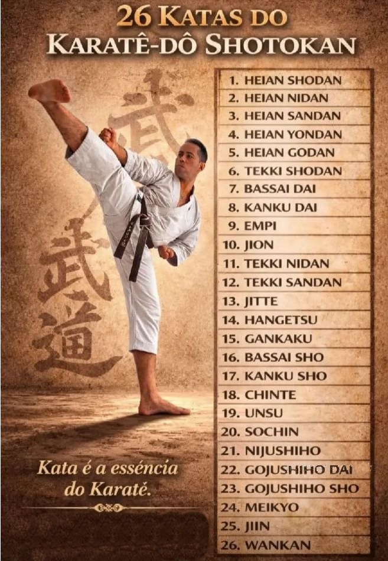
Розділ кіхон
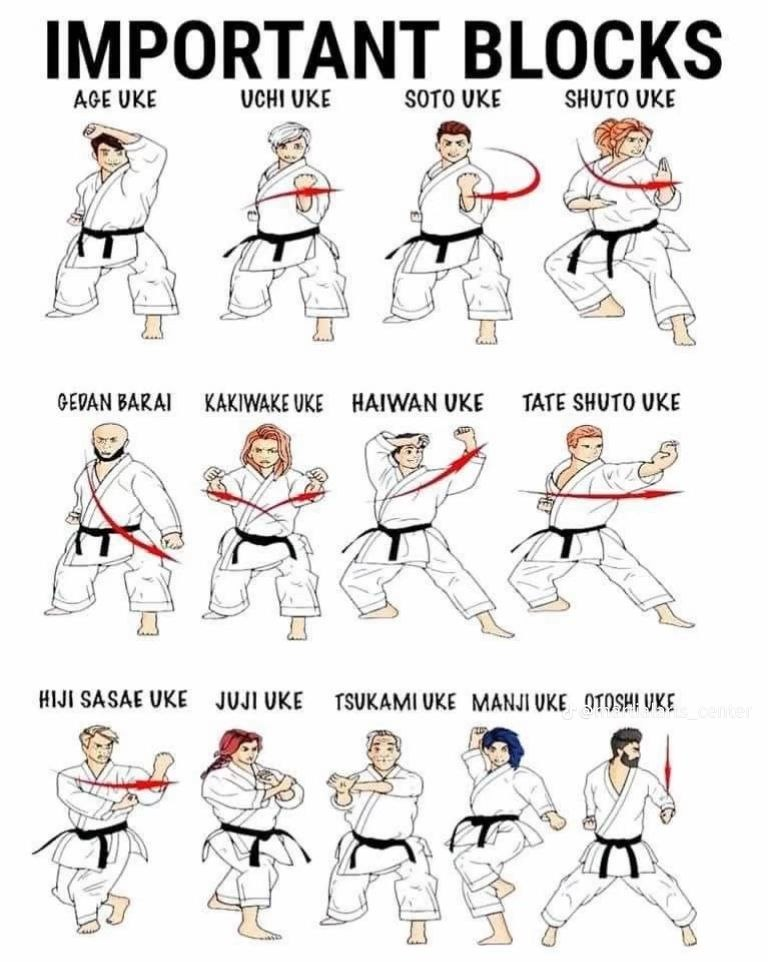
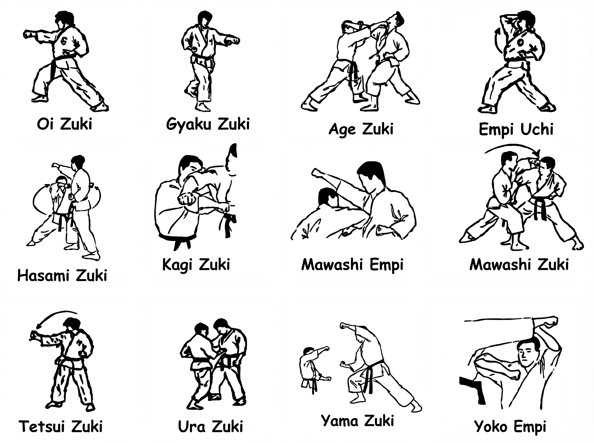
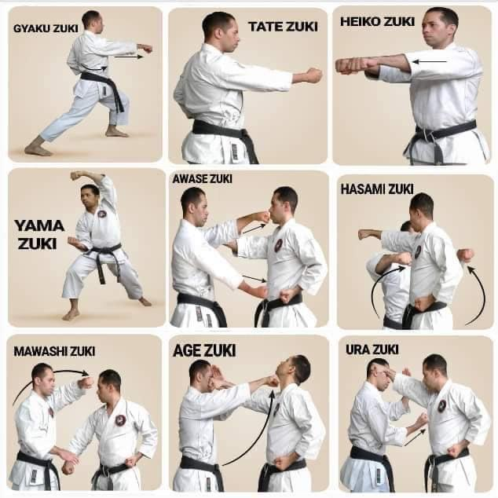
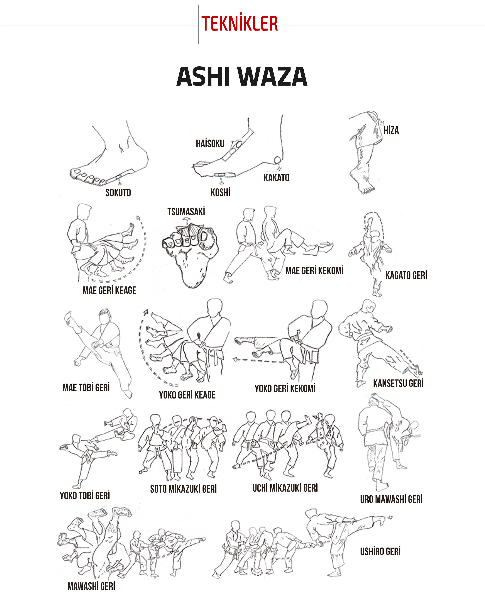
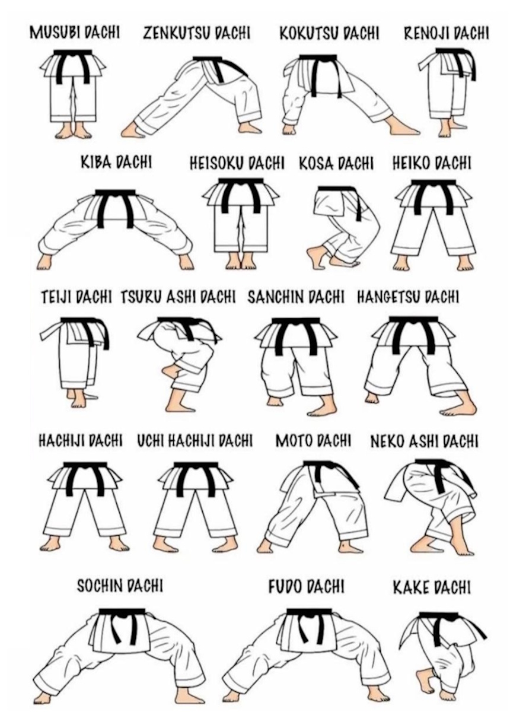
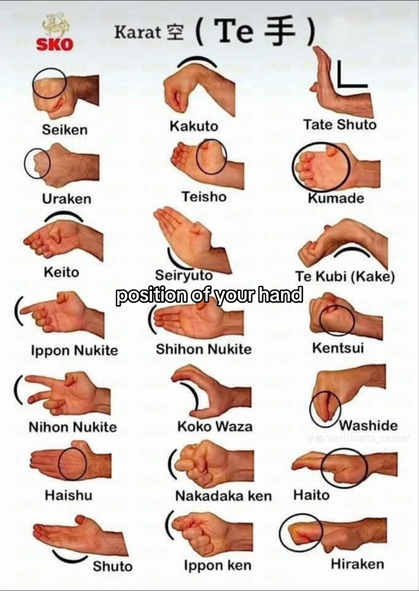
Розділ куміте
Інформація про змагання з куміте
Актуальні правила змагань1. WKF - Редакция правил 2020 года.
2. JKS - Редакция правил 2020 года.
3. SKIEF - Редакция правил 2019 года.
Мати довідку від терапевта про стан здоров'я.
Мати кімоно білого кольору, пояс, що відповідає технічному рівню, та екіпірування залежно від правил (відповідно до положення змагань - капа, пахова раковина, жилет, пояси червоного та синього кольорів, накладки на руки певного кольору, накладки на ноги певного кольору, шолом для дітей).
Адреса спортивного диспансера : Героїв Харкова 197 (Г Г-2)у Харкові розташована Міська клінічна лікарня № 2 імені О.О. Шалімова
Корисна інформація про атестацію
Загальна фізична підготовка
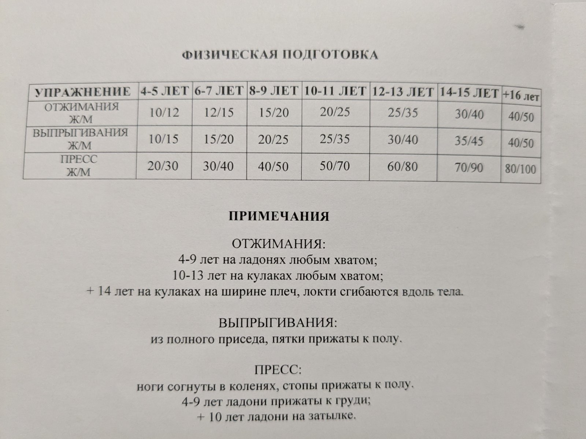
Удари, блоки, Kumite та GoHon Kumite для атестації
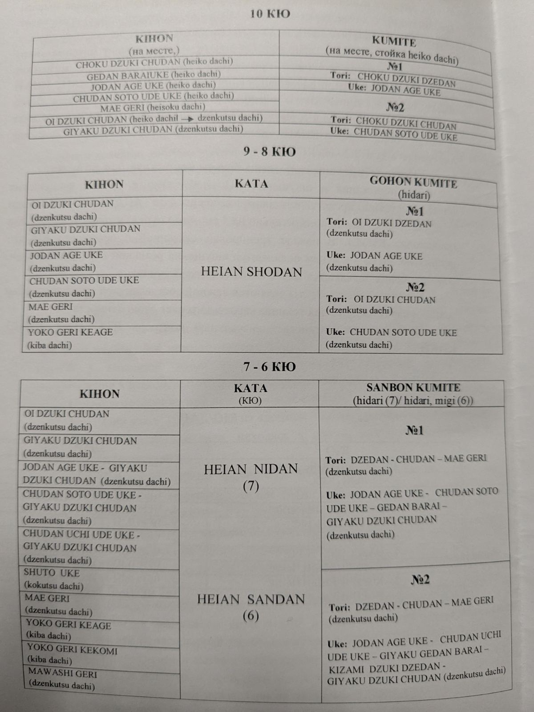
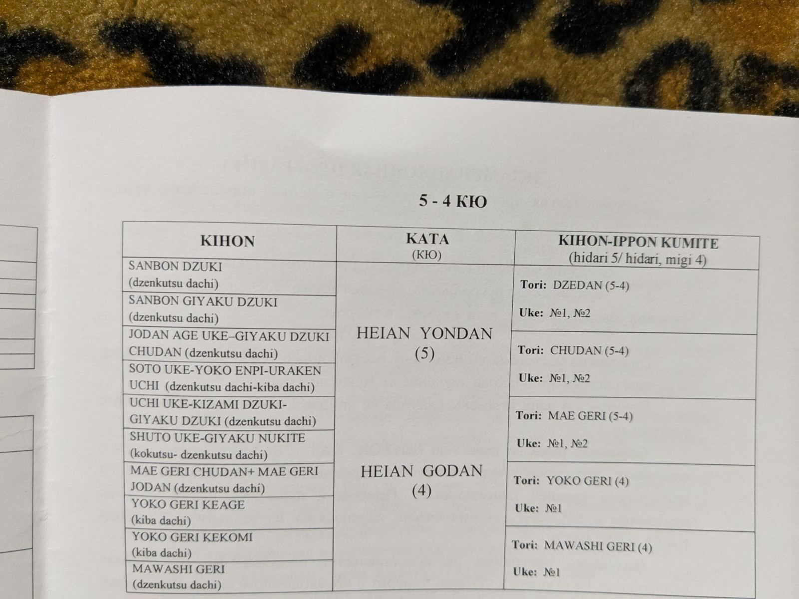
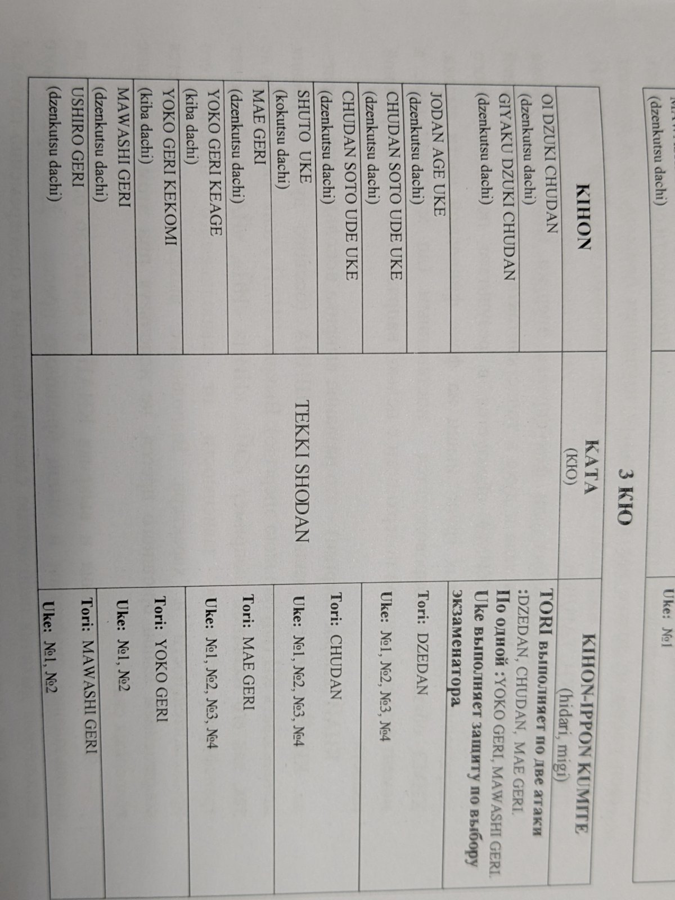
Контакти:
Тренування проходять за адресами:
пр-т. Героев Харькова, 230 з 18:00 до 19:00 та з 19:00 до 20:00
клубне тренування з 16:00 до 18:00. Харків, вул. Гордона,1(112 Ліцей).
Ньютона, 143Б 16:30 по 19:00 вівторок та четвер
Васіщево Садок 15:00 середа
Васіщево Ліцей 12:00 субота
Лізогубовка 10:00 субота
Лізогубовка 10:00 неділя
Телефон для довідок:
067-573-64-55